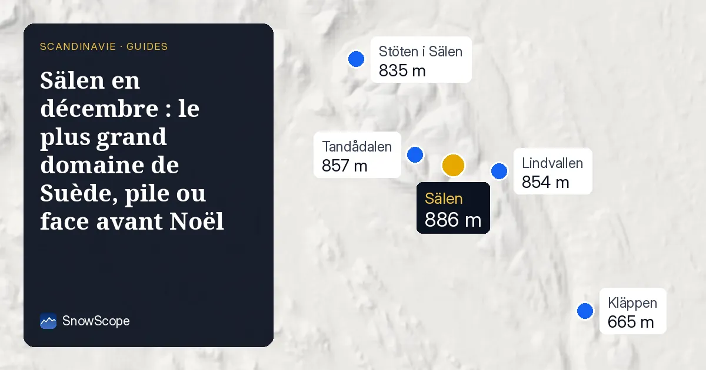

Sälen en décembre : le plus grand domaine de Suède, pile ou face avant Noël
C'est à Sälen qu'une bonne partie de la Suède apprend à skier : 80 km de pistes cartographiées et 96 remontées sur des collines basses et rondes. Pour décembre, nos 46 hivers d'historique sont francs. Un 15 décembre typique, le domaine a 28 cm, et la semaine du 15 au 21 décembre seuls 48 % des hivers avaient 30 cm ou plus.
Consultez les prévisions neige en temps réel pour Sälen sur l'application SnowScopeHauteurs de neige, alertes poudreuse et carte 3D, gratuitement.
Décembre, avant et maintenant
Les remontées de Sälen vont de 568 m à 886 m, et les collines sont si douces que notre historique donne une seule valeur pour tout le domaine. Cette valeur a baissé : la moyenne de décembre est passée de 33 cm sur les 15 premiers hivers à 24 cm sur les 15 derniers, et la part des semaines de Noël avec 30 cm est tombée de 80 % à 47 %.
L'hiver dernier en est un bon exemple : 16 cm le 15 décembre et 4 cm le 24 décembre.


Les semaines qui tiennent encore
La semaine de Noël est le meilleur pari, avec 61 % des hivers à 30 cm ou plus. Avant, les chances sont de 35 % pour chacune des deux premières semaines et de 48 % du 15 au 21 décembre. Le premier jour habituel avec 30 cm est le 17 décembre, juste avant les vacances.
Sälen n'est jamais profond en décembre (seules 11 % des semaines de Noël avaient 60 cm ou plus), mais rarement nu : dans aucun de nos 46 hivers le sol n'était nu le 15 décembre. Sans le travail de la station sur les pistes, une couche mince reste toutefois l'image normale de décembre.
Le prix de la semaine
Les forfaits de Sälen sont vendus à prix dynamiques dans la boutique officielle en ligne de l'exploitant. Le 13 novembre 2026, nous n'avons pu lire aucun prix fixe sur la page officielle, donc nous n'en citons pas. Le prix dépendra de vos dates ; achetez tôt et en ligne.
Trysil, mêmes années
Trysil, juste de l'autre côté de la frontière norvégienne, est le meilleur choix de décembre à proximité. Sa mi-pente (758 m) a 44 cm un 15 décembre typique, et 83 % des hivers y avaient 30 cm la semaine du 15 au 21 décembre. Son sommet à 1109 m est plus haut que tout ce qu'offre Sälen.
Trysil aussi a perdu de la neige au fil des ans, mais à partir d'un niveau plus élevé : la semaine de Noël, 80 % des 15 derniers hivers avaient encore 30 cm à mi-pente.
Conseils de réservation
Si vous aimez Sälen pour son côté familial, allez-y fin décembre ou, mieux, en janvier et février. Si décembre est la seule option, consultez le bulletin de neige en direct de la station une semaine avant, ou poussez jusqu'à Trysil.
Conseils aux skieurs
- Préférez la semaine de Noël aux dates plus tôt : 61 % de nos hivers avaient alors 30 cm, contre 35 % début décembre.
- Réservez modifiable : ces derniers hivers, la part des bonnes semaines de Noël est tombée à 47 %.
- Comparez avec Trysil avant de payer : sa mi-pente avait 30 cm mi-décembre dans 83 % des hivers.
- Journées courtes et froid : organisez le ski autour des heures de lumière et couvrez bien les enfants.
Autres cartes (sites externes)
Références et crédits
- Sälen: official lift-pass page of the operator (prices by date; no fixed price quoted), checked 13 November 2026 www.skistar.com/en/winter/skipass/buy-skipass/lift-pass-salen/
- Trysil: official lift-pass page of the operator (prices by date; no fixed price quoted), checked 13 November 2026 www.skistar.com/en/winter/skipass/buy-skipass/lift-pass-trysil/
À propos de ces chiffres
Chiffres de neige : historique SnowScope, 46 hivers passés (1980-81 à 2025-26) aux altitudes de la station, corrigé de l'altitude (une estimation pour une zone, pas les bulletins de la station) ; « bonne neige » = 30 cm ou plus au sol en moyenne sur la semaine. Carte : notre hauteur habituelle au 15 décembre répartie sur le relief selon l'altitude. Pistes et remontées : cartographie OpenSkiMap. Forfaits : grilles officielles des stations, vérifiées le 13 novembre 2026 ; les prix peuvent changer.
Bulletins d'avalanche officiels: Lavinprognoser (Naturvårdsverket)
Citer ce bulletin
Pour la recherche, l'enseignement ou la presse : chiffres et graphiques réutilisables librement sous CC BY 4.0 avec cette citation.
SnowScope (2026), Sälen en décembre : le plus grand domaine de Suède, pile ou face avant Noël, https://snowscope.app/blog/fr/2026/11/salen-december-ski-trip-honest-snow-cost.html, consulté le 2026-11-14
SnowScope (Atlas Labs). (2026, November 14). Sälen en décembre : le plus grand domaine de Suède, pile ou face avant Noël. SnowScope snow reports. https://snowscope.app/blog/fr/2026/11/salen-december-ski-trip-honest-snow-cost.html
BibTeX
@misc{snowscope2026salendecemberskitriphone,
author = {{SnowScope (Atlas Labs)}},
title = {Sälen en décembre : le plus grand domaine de Suède, pile ou face avant Noël},
year = {2026},
month = nov,
howpublished = {\url{https://snowscope.app/blog/fr/2026/11/salen-december-ski-trip-honest-snow-cost.html}},
note = {Published 2026-11-14 19:44 UTC; accessed 2026-11-14}
}· CC BY 4.0 · Méthodes, données et outils →
Sälen : neige et température selon l'altitude, cet hiver vs l'hiver dernier (outils) →
Suivre Sälen
Gratuit : un message quand la neige arrive, et la météo chaque matin.
Autres bulletins neige

Montgenèvre affiche 56 cm de neige habituelle en décembre à son pied de station, offrant aux skieurs du week-end une meilleure couverture précoce que Sestriere, de l'autre côté de la frontière.

À Monterosa Ski, le forfait journée en ligne va de 40,00 à 71,00 EUR. En décembre, la neige est en altitude : 124 cm habituels à 3 030 m, 6 cm à 1 207 m.

Skiez à Livigno pour 51,50 EUR par jour avant le 18 décembre, quand la neige au sommet atteint 30 cm dans 100 % des hivers passés.